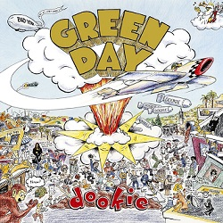
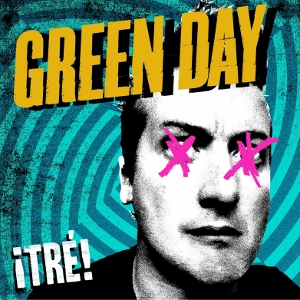
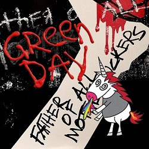
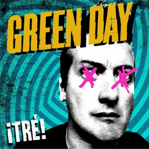
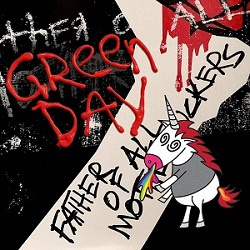
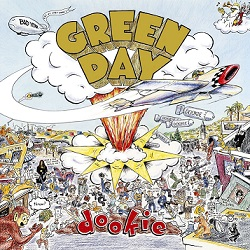
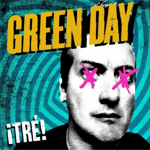
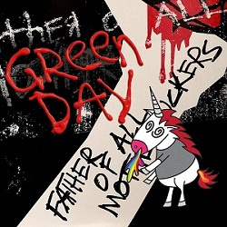

Recorded albums
Green Day have released 12 recorded albums so far and are still productive in making new songs. Here is the list of all of them, sorted by the oldest to the newest one.
 



Green Day have released 12 recorded albums so far and are still productive in making new songs. Here is the list of all of them, sorted by the oldest to the newest one.


